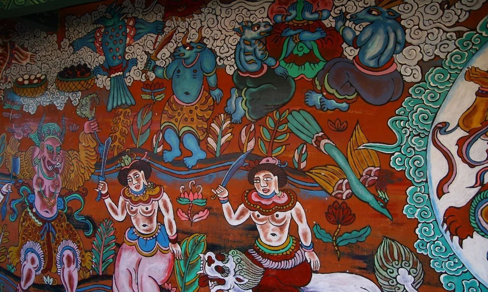

东巴画是纳西族东巴祭司在宗教仪式中绘制的绘画艺术，以矿物颜料与竹笔为工具，描绘神灵、鬼怪、自然万物与生死轮回。它是纳西族精神世界的视觉化呈现，色彩浓烈、构图神秘，兼具宗教庄严与艺术之美。
东巴画主要分为卷轴画、神路图与木牌画三大类型。卷轴画以长卷形式展现东巴神话故事，神路图描绘地狱、人间、天堂三界的宇宙观，木牌画则是祭祀时插于祭坛的彩绘木牌。每一幅画作都承载着纳西族对天地、生死与灵魂的深刻理解。
东巴画的绘制技法独具特色：画师以竹笔蘸取矿物颜料，在纸、布或木板上作画。红色用朱砂，黄色用雄黄，蓝色用石青，绿色用石绿，黑色用墨烟——这些天然矿物颜料历经数百年仍鲜艳如初，使东巴画成为中国古代绘画中色彩保存最为完好的艺术形式之一。
东巴卷轴画是祭司绘制的宗教长卷，以矿物颜料描绘神灵鬼怪与神话故事。画面宏大精细，色彩浓烈神秘，构图对称庄严，是东巴艺术的巅峰之作。每幅卷轴画都对应一部东巴经书，图文互证，相得益彰。
神路图长卷展现地狱、人间、天堂三界，是东巴教宇宙观的视觉化呈现。长达十余米的画卷中，鬼怪狰狞、人间烟火、天堂祥和依次铺展，笔触精细而震撼，堪称纳西族绘画的百科全书。
木牌画是东巴祭祀时插于祭坛的木制彩绘牌，绘有神灵与自然精灵。以松木为底、矿物颜料彩绘，线条粗犷有力，风格质朴而生动。每块木牌画都是一次祭祀仪式的见证，仪式结束后便随祭火化为灰烬，因此存世极少。